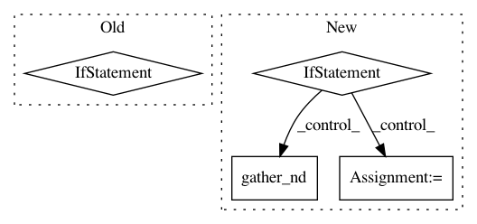

62d2ea56ae4a090aa68baf133137982a836700bd,thumt/utils/search.py,,create_inference_graph,#Any#Any#Any#,430
Before Change
else:
return ids[:, :top_beams, 1:]
else:
if top_beams == 1:
return ids[:, 0, 1:], scores[:, 0]
else:
return ids[:, :top_beams, 1:], scores[:, :top_beams]
After Change
// shape: [batch, beam_size]
normalized_scores = scores / output_length
if params.decode_normalize:
scores, indices = tf.nn.top_k(normalized_scores, k=top_beams)
// shape of ids: [batch, beam_size, max_length]
// shape of coordinates: [batch, beam_size, 2]
batch_pos = compute_batch_indices(batch_size, beam_size)
coordinates = tf.stack([batch_pos, indices], axis=2)
ids = tf.gather_nd(ids, coordinates)
// Return `top_beams` decoding
// (also remove initial id from the beam search)
return ids[:, :top_beams, 1:], scores[:, :top_beams]
In pattern: SUPERPATTERN
Frequency: 3
Non-data size: 4
Instances
Project Name: THUNLP-MT/THUMT
Commit Name: 62d2ea56ae4a090aa68baf133137982a836700bd
Time: 2018-01-25
Author: playinf@stu.xmu.edu.cn
File Name: thumt/utils/search.py
Class Name:
Method Name: create_inference_graph
Project Name: NifTK/NiftyNet
Commit Name: 534c4dc7423681faab78d1829c1ec3c31ffb8330
Time: 2018-01-30
Author: wenqi.li@ucl.ac.uk
File Name: niftynet/layer/resampler.py
Class Name: ResamplerLayer
Method Name: _resample_inv_dst_weighting
Project Name: NifTK/NiftyNet
Commit Name: ac2a794577087259da7200eefc792dbba40f8600
Time: 2017-11-02
Author: wenqi.li@ucl.ac.uk
File Name: niftynet/layer/resampler.py
Class Name: ResamplerLayer
Method Name: _resample_inv_dst_weighting